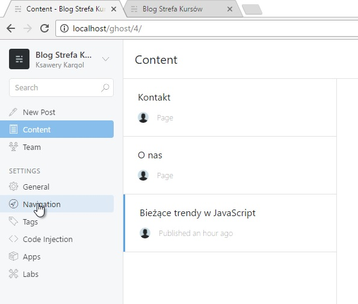

Systemy zarządzania treścią oparte na Node.js
Tradycyjne rozwiązania
Olbrzymia część aplikacji i stron webowych oparta jest na jakimś systemie zarządzania treścią (CMS). Jest to rozwiązanie niezbędne jeśli potrzebujemy jakiegoś sposobu na łatwe dodawanie oraz aktualizowanie treści strony. Tradycyjnie największą popularnością cieszyły się CMS napisane w PHP – każdy webdeveloper na pewno zna takie nazwy jak WordPress, Joomla czy Drupal. Są to rozwiązania bardzo dojrzałe, oferujące liczne funkcjonalności oraz rozszerzenia. Z drugiej strony mają dość poważne wady: są ciężkie, powolne i niejednokrotnie oferują wiele funkcji, z których na co dzień i tak nie skorzystamy.
Kolejny CMS, o którym warto wspomnieć to KeystoneJS. W porównaniu do Ghost jest on systemem bardziej uniwersalnym kładącym nacisk na tworzenie dowolnego typu stron. Keystone to taka swoista hybryda: bardziej framework do budowania własnego CMSa niż gotowy CMS. I to właśnie tutaj tkwi jego kluczowa cecha: za pomocą KeystoneJS możesz bardzo łatwo wdrażać swoje własne funkcjonalności.